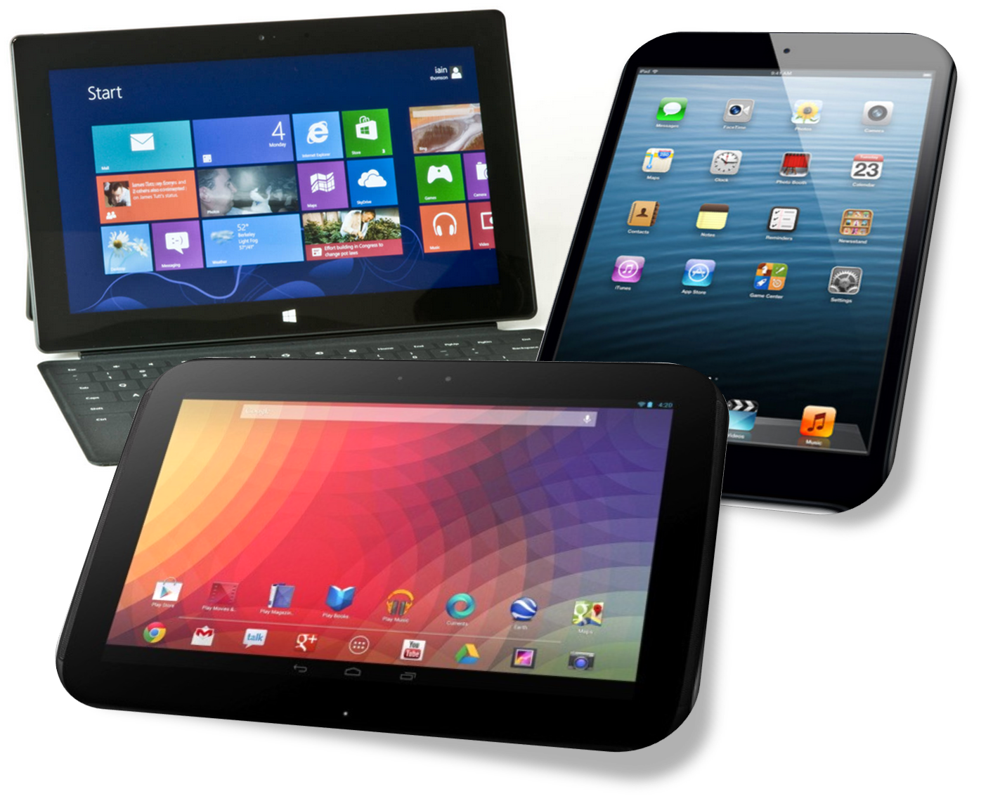
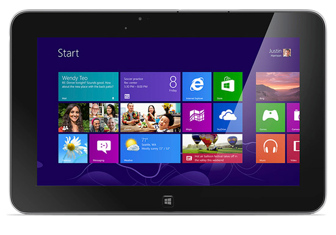

Una tablet és un "mix" entre ordinador i mòbil, és més gran que un mòbil però més petita que un ordinador o un portàtil. També és més potent que un mòbil però menys que un ordinador i així en la majoria d'apartats.
No té teclat ni ratolí (encara que en les ùltimes versions s'hi puguin afegir mitjançant un USB OTG o amb la tecnologia Bluetooth) aquests són substituits per una pantalla, en la majoria de casos, multitàctil.
Les mides de les pantalles de les tablets van des de les 7" fins les 12".
La idea va surgir després d'inventar l'smartphone, ja que la gent demanava pantalles més grans. Ara els mòbils ja són més grans i ja no hi ha tanta demanda de tablets.
Fins i tot Google té una marca propia, "Nexus" en que fabrica, mòbils i tablets. En aquest video expliquen les últimes novetat que han tret:
 Una tablet bàsicament funciona com un mòbil, la majoria tenen SO (Sistema Operatiu) Android o iOs (Apple) i ara fa poc han començat a sortir moltes tablets amb Windows. Abans les tablets i els mòbils tenien una gran diferència, que amb els mòbils es podia trucar i amb les tablets no, ara ja hi han moltes tablets que porten incorporat 3G i amb algunes ja es pot trucar, sino sempre es pot trucar amb algun programa VoIP (com Skype).
Les tablets ens han aportat a la nostra vida, potser més facilitat per fer treballs quan estas lluny de casa o viatjant, per que no podies agafar l'ordinador de torre, el mòbil és massa petit i el portàtil pot ser per a tu és massa gran, doncs pots agafar la tablet i arreglat.